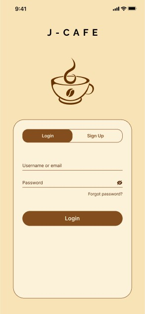
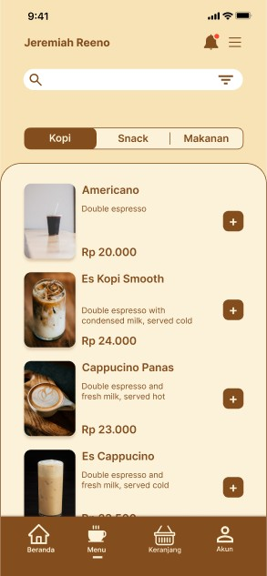
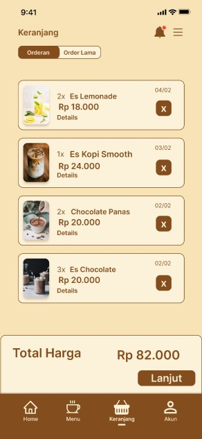
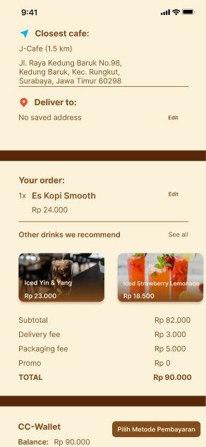
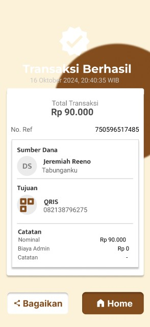

Desain UI/UX · Aplikasi mobile · Proyek UAS
J-Cafe
Desain aplikasi pemesanan untuk kafe. Pengguna melihat katalog menu, memasukkan pesanan ke keranjang, lalu membayar dan menerima struk, semuanya dari satu aplikasi.
- Peran
- Desainer UI/UX
- Platform
- Aplikasi mobile
- Alat
- Figma
- Konteks
- Proyek UAS 2025






Alur pemesanan
- 01
Login
Masuk atau daftar akun baru dari satu halaman.
- 02
Beranda
Kopi terbaik minggu ini dan menu rekomendasi.
- 03
Katalog menu
Menu dibagi jadi Kopi, Snack, dan Makanan, lengkap dengan harga.
- 04
Keranjang
Cek jumlah pesanan, hapus item, dan lihat total harga.
- 05
Pembayaran
Lokasi kafe terdekat, alamat antar, dan rincian biaya.
- 06
Struk
Bukti transaksi berhasil yang bisa dibagikan.
Alat yang dipakai
 Figma
Figma